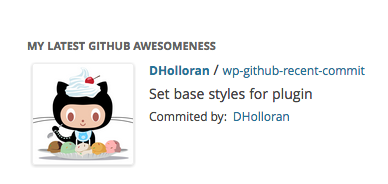
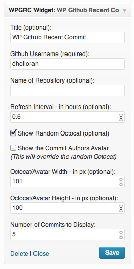

WP Github Recent Commit
Description: Wordpress widget that grabs a random Octocat from the octodex and the latest commit from the master branch of a public GitHub repository
Plugin Home Page: http://wordpress.org/extend/plugins/wp-github-recent-commit/
Check out a demo here.
Thanks to: If your project is included and I do not have you added please let me know, thank you.
If you have any issues please submit an issue or fix it/submit a pull request I will try to handle it ASAP. You an also contact me at Dan@danholloran.com.
Screenshots

Getting Started
To get started with WP Github Recent Commit you can download it directly here, search for WP Github Recent Commit in your administrator section's Plugins > Add New, or you can download it from the Wordpress plugins directory
Wordpress Plugin Directory Instructions
- Search for WP Github Recent Commit in Plugins > Add New
- Install & Activate WP Github Recent Commit
Manual Install Instructions
- Unzip your download and place in wp-content/plugins/
- Activate WP Github Recent Commit in the Wordpress Admin area
Using the widget
- Go to Appearance > Widgets drag the WP Github Recent Commit widget to the sidebar area of your choice
- Fill in your GitHub username and set the rest of the options
Using the function
- Place this code in your template file
-
Add a user name and set any other options
if ( function_exists('wpgrc') ) { wpgrc( array( 'id' => "1", // optional, used for caching purposes 'username' => '', // required, it just won't work with out it 'repository' => "", // optional, if not it will just be the last commit from all repos for the username 'refresh_interval' => "0.5", // optional default 0.5hrs aka 30min 'show_octocat' => "true", // optional boolean default true 'octocat_width' => "100", // optional int default 100 'octocat_height' => "100" // optional int default 100 'commit_count' => "1", // optional int default 1 'show_avatar' => false // optional boolean default false ) ); }
Using the shortcode
- Place in your admin editor
[wpgrc id="1" username="" repository="" refresh_interval="0.5" show_octocat="true" octocat_width="100" octocat_height="100" commit_count="1" show_avatar="false"] - Add a user name and set any other options